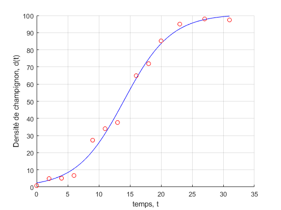
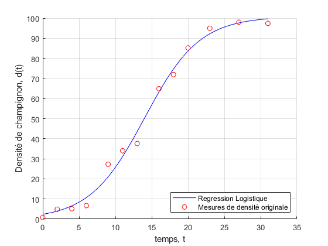

Exercice 5, Croissance de champignons (4 pts)
Contents
5.1) Regression - Calcul
Variables de base:
d0 = 1; K0 = 100; r0 = 1.5; init_values = [d0, K0, r0];
data = load('data_champi.dat');
X = data(:,1); Y = data(:,2);
 Régression non linéaire (logistique)
Régression non linéaire (logistique)
On demande à matlab de déterminer une fonction suivant une loi logisitque (voir fonction funcFit() ci-dessous) qui pour chaque x_i donné dans "data_champi.dat" approxime son résultat y_i (densité de champignon au temps i) le mieux possible
optimized_param = nlinfit(X, Y, @funcFit, init_values) interv = [min(X), max(X)]; f_opti = @(x) (funcFit(optimized_param, x));
5.2) Regression - Représentation
figure; hold on; fplot(f_opti, interv, '-b') plot(X, Y, 'or'); xlabel('temps, t'); ylabel('Densité de champignon, d(t)'); grid on;
Si on met cette ligne plus haut un graph vide apparaît au lieu d'un graph normale avec les fonctions dessus.
legend('Regression Logistique', 'Mesures de densité originale', 'location', 'southeast');
Fonctions
funcFit()
function y = funcFit(param, x) % param - vecteur contenant les paramètres d0, K et r (dans cet ordre) % x - variable "principale" de la fonction paramétrique (ici le temps) % Return: fonction "encodée" % d0 = param(1); K = param(2); r = param(3); y = K ./ (1 + (((K ./ d0) - 1) * exp(-r * x))); end
optimized_param =
2.3731 100.7742 0.2654